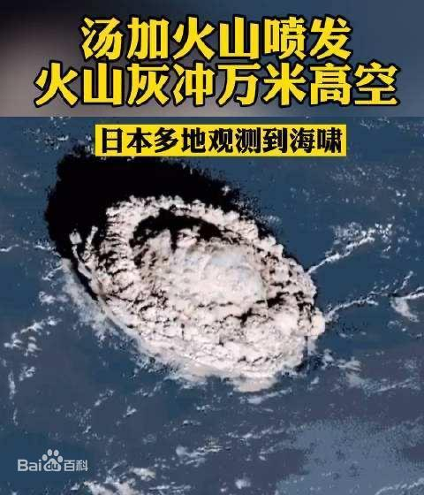
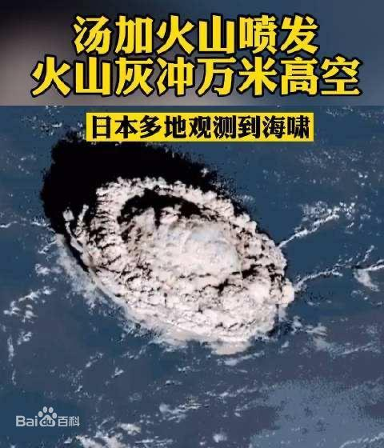

1月3日-象限仪座流星雨
象限仪座流星雨，是每年年初都会发生的一个比较大的流星雨。象限仪是一个比较古老的星座，现代星座的划分中则没有这个星座，其位置大致在牧夫座和天龙座之间，赤纬可达50N左右。该流星雨的速度中等，流星亮度较高，分辨象限仪群内的流星并不难，它们的颜色多有些发红。
天文预报显示，2022年象限仪座流星雨极大将出现在北京时间1月4日4时40分。
天文预报显示，象限仪座流星雨2023年极大预计出现在北京时间1月4日11时40分。
象限仪座流星雨
| 外文名 | Quadrant meteor shower | 状 态 | 已经废弃的星座 |
| 别 名 | “天龙座流星雨“ | 赤 纬 | 50N左右 |
| 出现时间 | 1月1日至5日 | 位 置 | 牧夫座和天龙座 |
形成原因
象限仪座流星雨，是个已经废弃的星座，流星雨原名“天龙座流星雨”，它的辐射点原本位于天龙座，现今已经转移到牧夫座。象限仪流星雨，为传统大流量的流星雨，对于天文学家和天文爱好者来说，都是最陌生的一个，就连它的母体彗星直到现在还是一个迷。一种观点是象限仪流星雨的母体彗星为C/1490 Y1和C/1385 U1，而有的科学家认为它是小行星2003 EH1所带来的。这个流星雨或许是地球经过小行星 2003 EH1 (原来是彗星，疏松物质被太阳吹散后，剩下的彗核变成是小行星) 在轨道上的残留物所形成的 。
名称由来
象限仪座流星雨，是个主要的流星雨，为了避免与十月出现的另外一个主要流星雨“十月天龙座流星雨”混淆，故此采用个废弃了的星座来命名，亦是国际天文联会唯一的一个用不存在星座来命名的流星雨。较旧的中文天文书刊多采用原名，现时仍有部份中文刊物称这个流星雨为“天龙座流星雨”。

1月15-日汤加火山爆发
北京时间2022年1月15日，位于南太平洋岛国汤加王国境内洪阿哈阿帕伊岛海底火山（175.38°W，20.57°S）发生猛烈喷发，多个卫星捕捉到火山喷发的瞬间：海面大面积“炸开”，巨大波纹向外迅速扩散。汤加首都努库阿洛法已观测到海啸，斐济、萨摩亚、新西兰、日本等国均已发布海啸警报。1月18日，汤加副首相波阿西·泰伊宣布国家进入紧急状态，该国通讯依然处于中断状态。1月19日，汤加首相府正式宣布，全国自1月16日至2月13日进入紧急状态。
2022年1月17日，从中国气象局获悉，中国风云三号D星监测显示，此次可能是30年来规模最大的一次火山爆发，汤加火山喷发将影响拉尼娜状态的发展趋势。
2022年1月18日，南太平洋岛国汤加火山喷发所致首例死亡已被确认。现年50岁的英国人安吉拉·格洛弗在火山引发的海啸中不幸丧生。
2022年1月19日，国家主席习近平就汤加火山爆发造成严重灾害向汤加国王图普六世致慰问电。
截至当地时间1月23日20时20分，汤加火山喷发引发海啸已造成6人死亡。
2022年11月21日，新西兰国家水与大气研究所确认汤加火山喷发规模创100多年来最高纪录。
汤加海底火山喷发
| 外文名 | Tonga submarine volcanic eruption | 发生地点 | 洪阿哈阿帕伊岛火山 |
| 发生时间 | 北京时间 2022年1月15日 | 伤亡情况 | 6人死亡 |
| 地理位置 | 175.38°W，20.57°S |
喷发经过
2022年1月14、15日，南太平洋岛国汤加的洪阿哈阿帕伊岛海底火山连续两天剧烈喷发，首都努库阿洛法出现1.2米高的海啸。卫星图像显示，喷发的大片火山灰以及气体像蘑菇云一样，从蓝色的太平洋海域升起。
北京时间1月15日中午12点10分前后，在南太平洋岛国汤加洪阿哈阿帕伊岛附近发生了一次猛烈的普林尼型喷发，大量气体裹挟烟尘形成庞大蘑菇云。据weathermodels网站估算，喷发高度至少25公里。
气候影响
据中国气象爱好者分析，此次汤加火山喷发不足以输送影响全球气候的巨量火山灰进入平流层；火山喷发地点在南半球，对北半球的影响相对较小。因此，本次汤加火山喷发，对全球气候的影响，尤其是对北半球的影响，应该要比皮纳图博火山要弱，更比不上坦博拉火山，北半球不太可能出现“无夏之年”。
专家分析，火山喷发一般会对未来1到2年全球和东亚气候产生持续影响，大概出现0.3℃左右的降温效应。对于我国而言，火山喷发可减弱次年东亚夏季风强度，进而导致我国夏季雨带偏南。因此，建议将火山喷发的持续影响纳入汛期降水预测因子中加以考虑。
太空影响
2022年5月，GOES-17卫星捕捉到了汤加火山于2022年1月15日海底爆发时形成的伞形云团，美国国家航空航天局(NASA)电离层连接探测器(ICON)和欧洲航天局(ESA) Swarm卫星的数据，科学家发现汤加火山爆发后几小时内，在位于太空边缘的电离层(地球带电的上层大气层)形成了以飓风速度行动的风和不寻常的电流。相关成果发表在《地球物理学研究快报》(Geophysical Research Letters)。
 
